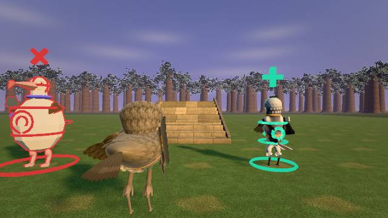
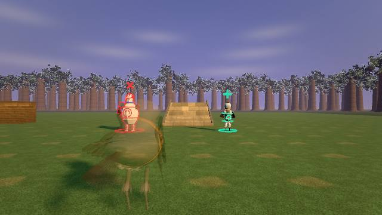
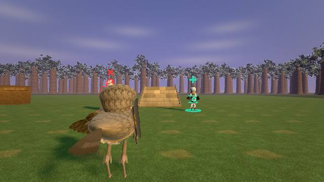

Nightjar Playable
Assassin · Playable since Stage 4
Appearance: flat and horizontal, as if pressed to a branch; a wide flat head with enormous dark eyes and a tiny bill that opens into a huge gape; long pointed wings and tail. Bark-mottled grey and brown, with white wing spots that flash when it moves. Reads as "flat wedge with big eyes".
How to play
Assassins pick off one target at a time. Wait in cover, strike a bird that has strayed from its flock, and leave before the answer arrives. Mobility is your health bar.
Nightjar fights with the Moth Pistol, which hits instantly. Damage drops off between 18 m and 38 m, and head hits are beak shots worth ×1.65. Every level above 1 is a Molt: +30 max HP per level; +3% gun damage of base per level; +1 Song power per level; +3 melee damage per level.
Abilities
Four abilities. Slots 1 to 3 unlock at level 1, the ultimate at level 6. Each can be upgraded three times, for 1, 2, 5 AP, in order; see Ability Points. The shortest cooldown in the kit is Gape at 12 s.

1. Gape
Lunge 6 m along your aim and bite (1.2 m radius): 90 + 0.9 x SP Song damage and a 1 s silence. You heal 30% of the damage dealt.
- Tier 1 · 1 AP+30 damage (120 + 0.9 x SP) damage +30
- Tier 2 · 2 AP-3 s cooldown cooldown -3 s
- Tier 3 · 5 APSilence 1.75 s silence +0.75

2. Nightfall
Invisible and silent for 7 s. Your first hit out of it deals +60 + 0.6 x SP Song damage and slows 30% for 1.5 s.
- Tier 1 · 1 AP+3 s duration (10 s) duration +3
- Tier 2 · 2 AP-6 s cooldown cooldown -6 s
- Tier 3 · 5 APYou stay invisible after the first hit; the second hit ends it keep +1
3. Churring Call
Enemies in a 12 m, 60 degree cone are revealed for 5 s and take +15% damage from all sources for 5 s.
- Tier 1 · 1 AP+6 m range (18 m) range +6 m, length +6
- Tier 2 · 2 AP-4 s cooldown cooldown -4 s
- Tier 3 · 5 APDamage amp +25% amp +0.1

4. Night Swallow
Dash to an enemy hero within 12 m and strike: 200 + 1.5 x SP Song damage. If its HP is then below 20% of max, it dies.
- Tier 1 · 1 APExecute threshold 25% execute +0.05
- Tier 2 · 2 AP-20 s cooldown (70 s) cooldown -20 s
- Tier 3 · 5 APAn execute resets the cooldown and makes you invisible for 3 s
Since Stage 4. See all heroes.